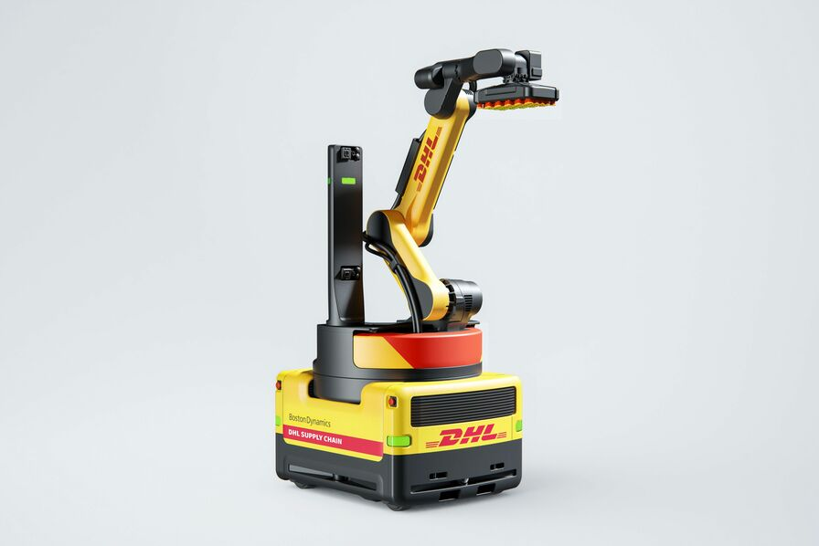

DHL et Boston Dynamics accélèrent leur partenariat
De E.Noam Publié le 15 mai 2025
. Source : Boston Dynamics
DHL, géant mondial et force logistique
DHL, l’incontestable leader mondial de la logistique, gère chaque jour un volume colossal de 4,4 millions de colis à travers le globe. Au moins un tiers de ses quelque 600 000 employés sont directement impliqués dans des activités logistiques, un travail titanesque qui exige rigueur, efficacité et réactivité.
Une stratégie ambitieuse d’automatisation
Consciente des défis liés à cette charge croissante, l’entreprise a engagé une stratégie ambitieuse de transformation digitale et robotique. En seulement trois ans, DHL a investi plus d’un milliard d’euros dans son pôle de logistique contractuelle, déployant plus de 7 500 robots à l’échelle mondiale pour optimiser ses processus. Parmi ses partenaires figurent plusieurs leaders de la robotique comme Boston Dynamics, AutoStore, Fox Robotics, Geek+ et Locus Robotics.
La collaboration avec Locus Robotics s’est révélée particulièrement impressionnante : DHL a récemment annoncé avoir dépassé les 500 millions de prélèvements effectués grâce aux robots autonomes de Locus. Pour mesurer l’accélération du phénomène, il a fallu 28 mois pour atteindre les 100 premiers millions après les 10 premiers, mais seulement 154 jours pour les 100 derniers. Ces chiffres témoignent de l’efficacité grandissante des robots mobiles autonomes dans les entrepôts.Sally Miller, Directrice des Systèmes d’Information de DHL Supply Chain, insiste sur la transformation profonde que traverse l’entreprise via la digitalisation. DHL souhaite désormais aller au-delà de la simple adoption technologique, en devenant un acteur actif du co-développement des solutions robotiques de demain, adaptées aux exigences spécifiques de la chaîne logistique moderne. Et cela passe par sa collaboration avec Boston Dynamics
Un partenariat stratégique avec Boston Dynamics
La collaboration entre DHL et Boston Dynamics remonte à 2018, marquant le début d’un partenariat stratégique autour de la robotisation des entrepôts. C’est en 2023 que DHL a commencé à déployer le robot Stretch en Amérique du Nord, suivi par le Royaume-Uni et d'autres pays européens. Conçu pour automatiser le déchargement de conteneurs, Stretch a rapidement fait ses preuves avec une cadence allant jusqu’à 700 colis par heure. En 2025, DHL a annoncé le déploiement de plus de 1 000 unités supplémentaires d’ici 2030, tout en explorant de nouveaux cas d’usage. L’une des priorités futures est le développement du case picking, une tâche particulièrement chronophage. En élargissant les capacités de Stretch, DHL ambitionne d’en faire un robot polyvalent au service de toute la chaîne logistique.
Pour Robert Playter, PDG de Boston Dynamics, cette alliance s’inscrit dans une continuité logique : « Ensemble, nous fixons une nouvelle norme pour l’industrie logistique. » Stretch pourrait devenir le premier robot multifonction logistique à grande échelle.
Une nouvelle ère pour la logistique mondiale
L'accélération du partenariat entre DHL et Boston Dynamics illustre clairement l’orientation prise par le secteur logistique. Face à l’augmentation des cadences, aux enjeux de performance et à la pénibilité des tâches, la robotisation n’est plus un luxe mais une nécessité. Cette alliance stratégique pourrait bien préfigurer une nouvelle ère pour la logistique mondiale, combinant innovation, résilience et productivité à grande échelle.